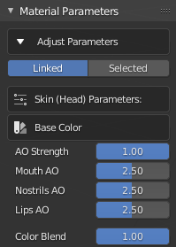

Material Parameters

Default material pane
Opening the Material Parameters dropdown will show the default material parameters pane, which will be initially devoid of any information.
Once a character has been imported, the material parameters pane will show a context sensitive set of parameters dependent on the object selected in the viewport.
Illustration of various material parameter sets
The 5 principal object types (relating to the character itself rather than any clothing or accessories) are the Skin, Eyes, Eye Occlusion, Hair and Teeth.
Notable Parameters
When manipulating the material parameters the function of most parameters is self evident, however there are several which require further explanation.
Color Blending - When a map such as a micro normal map or an ambient occlusion map is being blended with a base normal map or diffuse texture, the shader requires a parameter to control the extent of the blending. These parameters are labelled as a strength for multiplicative type blending, and as a blend overlay strength for overlay type blending. These parameters are discussed here.
Exponents - There are many occasions where exponents are used with an input map (e.g. Roughness) in order to change the map values in a non linear way. For example to exaggerate roughness in relatively smooth areas or to de-emphasize roughness in rougher areas. Please see these notes on the effects of exponents.
Min-Max - Occasionally, a min and max value is used to define upper and lower limits for value ranges of input bitmaps. These are not simple value clamps, instead they are a remapping of the input values to a new user defined range. This is explained more thoroughly here.
Examining Material Parameters
Single Materials
In order to view the settings specific to a particular object’s material, you must first select the object in Blender’s viewport (in Object Mode).

To examine or manipulate a single material first make sure that in Adjust Parameters the Selected button is active.
Click on the Material Properties tab  in the properties pane. Then select the material you require from the displayed materials list.
in the properties pane. Then select the material you require from the displayed materials list.

The Material Parameters pane of the CC/iC Pipeline tool will then be updated with the available settings for the Selected Material.

Linked Materials
Many of the materials in the imported character share the same shader, this allows for the collective editing of shared shader parameters across multiple materials; referred to here as Linked Materials.
Linked Materials are grouped as follows

In order to edit the settings for a group of linked materials ensure that in Adjust Parameters the Linked button is active.
Selecting an object in in Blender’s viewport (in Object Mode) will then update the Material Parameters pane of the CC/iC Pipeline tool with the available settings for the Linked Materials associated with the selected object.
Thus, multiple settings can be simultaneously edited and consistency maintained across the linked materials in an imported character.
Material Parameter Discussion
The specific parameters for each material type are discussed in details in the following sections:
Eyes A full discussion of the eye structure and the options (including alternative materials) available.
Skin All of the skin shader parameters and their location specific properties are discussed.
Teeth, Gums and Tongue A discussion of the shaders used inside the mouth.
Hair TBD